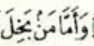
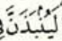
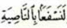

ተጅዊድ
ኢቅላብ
ኢቅላብ ማለት መቀየር/መገልበጥ ማለት ነው ። ይህም ማለት ኑን አስ ሳኪናህን እና ኑን አት ተንዊንን የኢቅላብ ፊደል ፊት ለፊታቸው ሲመጣ ወደ ሌላ ሀርፍ / ሚም( م ) ይቀየራሉ ።የ ኢቅላብ ፊደል አንድ ብቻ ስትሆን እሷም ባእ ( ب ) ናት።
ኢቅላብ ስናደርግ
- ኑን ወደ ሚም ትቀየራለች
- ሚም ወደ ባእ ትሸሸጋለች/ትደበቃልች
ምሳሌዎች
| ኑን አስ ሳኪናህን |
ኑን አት ተንዊን |
| ከ ሁለት ቃላት |
ከ አንድ ቃላት |
ከ ሁለት ቃል |
|  |
 |
 |